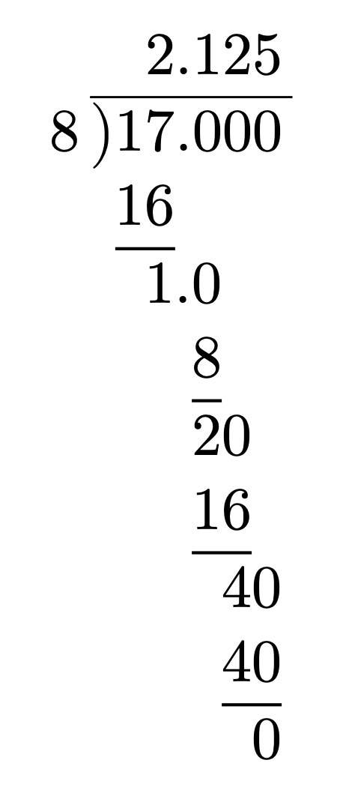
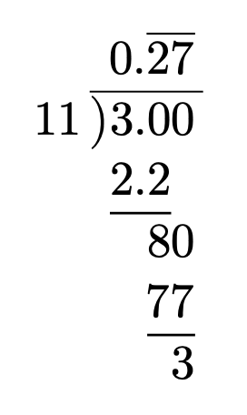
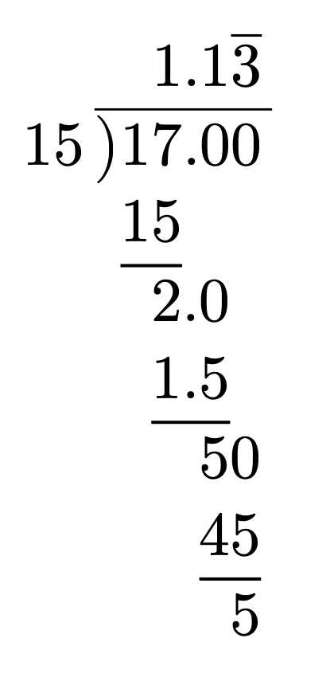
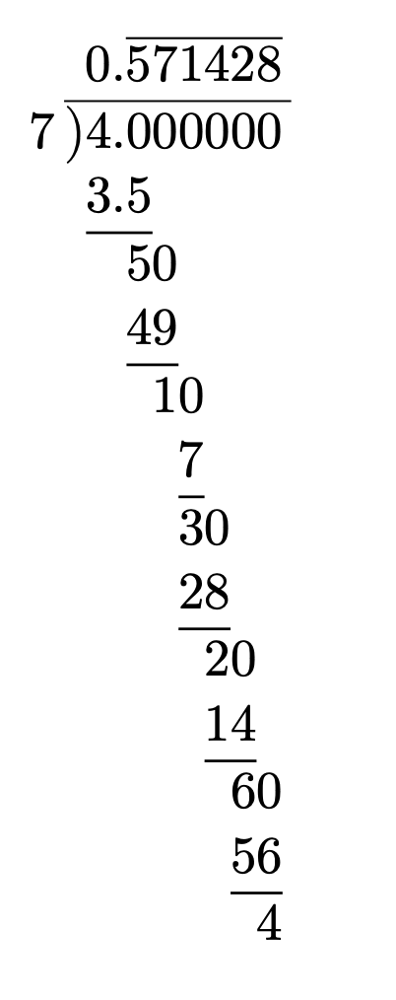

Recurring Decimals
Example: Long Division
To turn fractions into decimals, we can use long division. For example, to calculate \(\frac{17}{8}\):

Notice that we stop when we get a remainder of zero.
Example: Fraction to Recurring Decimal
Video: Converting from a fraction to a recurring decimal
We can also do this to find a recurring decimal. For example, to find \(\frac{3}{11}\), we can do:

As soon as we get a repeated digit, we know we will be stuck in a loop, so we mark the decimal as recurring.
Sometimes there is a non-recurring decimal part before the recurrence begins:

Notice that the vertical bar only extends over the repeating part.
And sometimes it takes a long time to repeat:

Example: Recurring Decimal Notation
There are actually two ways to represent recurring decimals, the bar over the repeating part or a dot above the first and last digit of the repeating part, so for example, the recurring decimal \[ 0.3456456456456456\ldots \] Can be represented either as \[ 0.3\overline{456} \] or as \[ 0.3\dot{4}5\dot{6} \]
Test Your Understanding
Write out what each of these recurring decimals looks like:
\(0.\dot{3}\)
\(0.4\overline{3}\)
\(0.\dot{4}\dot{3}\)
\(0.1\overline{23}\)
\(0.\dot{1}2\dot{3}\)
\(0.12\overline{3}\)
\(0.4\dot{3}0\dot{3}\)
Answers
\(0.\dot{3} = 0.333\ldots\)
\(0.4\overline{3} = 0.4333\ldots\)
\(0.\dot{4}\dot{3} = 0.434343\ldots\)
\(0.1\overline{23} = 0.1232323\ldots\)
\(0.\dot{1}2\dot{3} = 0.123123123\ldots\)
\(0.12\overline{3} = 0.12333\ldots\)
\(0.4\dot{3}0\dot{3} = 0.4303303303\ldots\)
Exercise 1
Please complete the worksheet.
Example: Recurring Decimals to Fractions
Video: Recurring Decimals to Fractions
To convert \(0.\overline{54}\) to a fraction, we can use algebra. We let \(x\) equal the recurring decimal, then work out the value of \(x\) as fraction.
\[\begin{align*} x = 0.&545454\ldots & \text{Write out the recurring decimal} \\ 100x = 54.&545454\ldots & \times 100 \text{ because two recurring digits} \\ 99x = &\ 54 & \text{Subtract the first line from the second} \\ x = &\ \dfrac{54}{99} = \dfrac{6}{11} & \text{Divide and simplify} \end{align*}\]
The trick here is that the recurring decimal parts cancel out when they are subtracted.
\[\begin{align*} x &= 0.133333\ldots & \text{Write out the recurring decimal} \\ 10x &= 1.333333\ldots & \times 10 \text{ because one recurring digit} \\ 9x &= 1.2 & \text{Subtract the first line from the second} \\ x &= \dfrac{1.2}{9} = \dfrac{12}{90} = \dfrac{2}{15} & \text{Divide and simplify} \end{align*}\]
Note here that when we subtract the first digit after the decimal point does not match, so we are effectively doing \(1.3-0.1\). The decimal digits after this do cancel because they are identical.
\[\begin{align*} x = 3&.0868686\ldots \\ 100x = 308&.6868686\ldots \\ 99x = 305&.6 \\ x = \dfrac{305.6}{99} &= \dfrac{3056}{990} = \dfrac{1528}{495} \end{align*}\]
The calculation this time is \(308.6 - 3\).
\[\begin{align*} x = 0&.5401401401\ldots \\ 1000x = 540&.1401401401\ldots \\ 999x = 539&.6 \\ x = \dfrac{539.6}{999} &= \dfrac{5396}{9990} = \dfrac{2698}{4995} \end{align*}\]
Be careful here. 5 is greater than 1 so the calculation we need to do is \(540.1-0.5\).
Exercise 2
Please complete the worksheet.